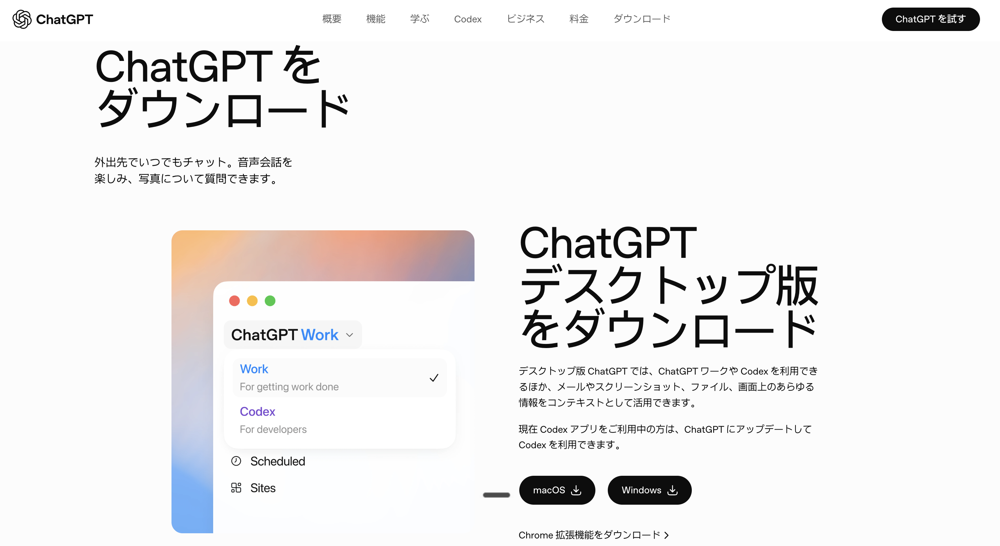
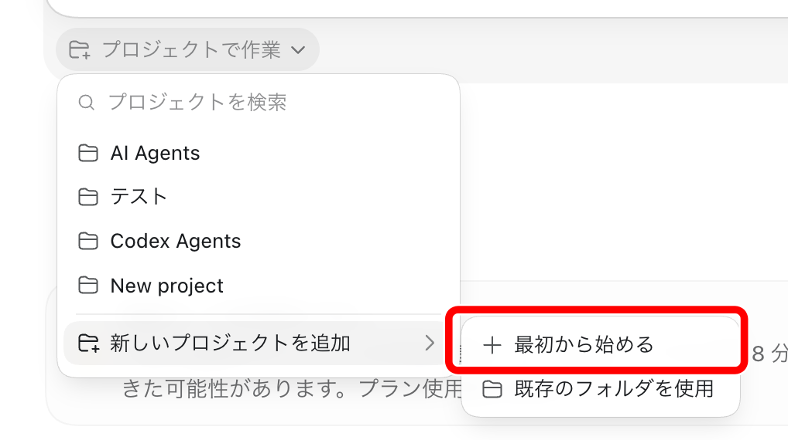
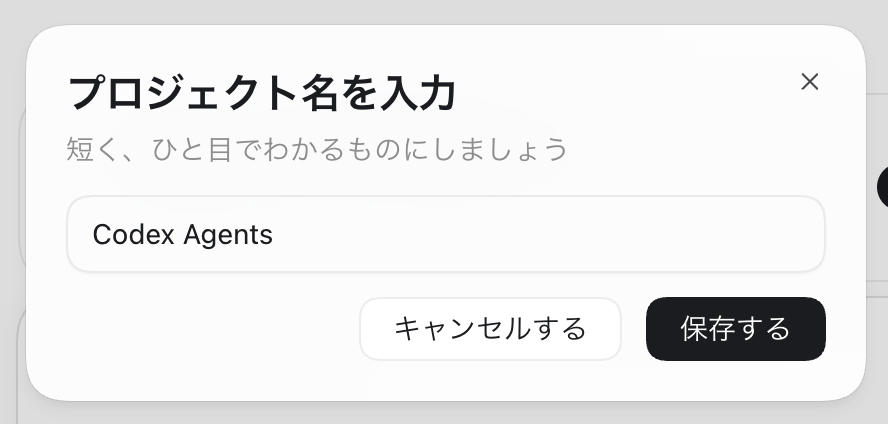
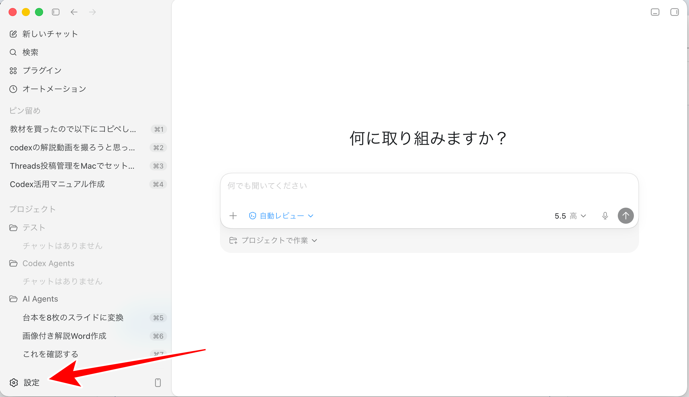
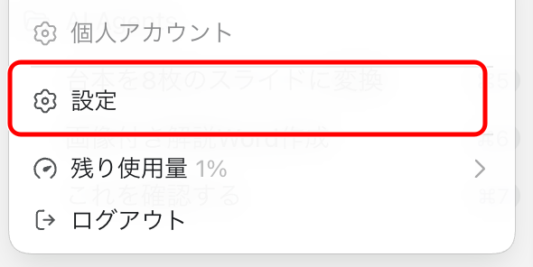
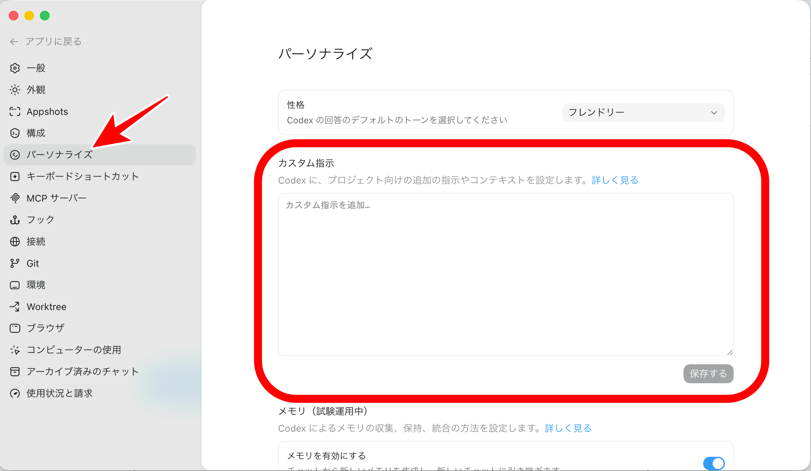

⚠️ 使用上の注意事項
本マニュアルは、Codex（ChatGPTのAIエージェント）を導入し、日々のタスクを任せられる状態にするための手順を解説します。
最初はCodex専用フォルダの中だけで動かし、機密情報は触らせない。
- Codexはパソコン内のファイル作成・編集ができるAIエージェントです。設定や指示を間違えると、意図しないファイル編集や上書きが起きる可能性があります。
- 本マニュアルでは安全性を高めるため、最初はCodex専用フォルダの中だけで作業する前提にしています。
- 重要なファイル、機密情報、APIキー、パスワード、クレジットカード情報、SSH鍵などは、Codexに読ませないでください。
- 慣れていないうちは「フルアクセス」をオンにしないでください。
📄 免責事項
本マニュアルは情報提供を目的として作成されたものであり、内容の正確性・完全性・最新性を保証するものではありません。記載された手順・設定・操作等を実行したことにより生じたいかなる損害についても、作成者は一切の責任を負いません。利用はすべて利用者ご自身の判断と自己責任のもとで行ってください。OpenAIおよびCodexの仕様・料金・利用条件は予告なく変更される場合があるため、必ず公式情報をご確認ください。
第1章 Codexを導入する
CodexはOpenAIが提供しているAIエージェントです。ChatGPTのように質問へ答えるだけでなく、ファイル作成、資料作成、ブラウザ操作、アプリ操作など「作業そのもの」を進めてくれます。まずはアプリを入れて、お持ちのChatGPTアカウントでログインしましょう。
1. Codexアプリをダウンロードする

2. 起動して、お持ちのChatGPTでログインする
ダウンロードしたアプリを起動し、普段使っているChatGPTアカウントでそのままログインします。新しくアカウントを作る必要はありません。
まだChatGPTのアカウントを作っていない方は、先にアカウントを作成しましょう。
第2章 専用フォルダを作ってCodexと結びつける
Codexは「プロジェクト」という単位で作業フォルダを管理します。デスクトップに手動でフォルダを作らなくても、Codexの機能でフォルダごと新しく作れます。
1. 新しいプロジェクトを作る
まずはCodexの「新しいチャット」画面にて、プロジェクトの作成〜Codexへの紐づけを行います。「新しいプロジェクトを追加」→「最初から始める」を選びましょう。

2. 名前を「Codex Agents」にして保存する
プロジェクト名の入力欄に「Codex Agents」と入力して保存します。これで専用フォルダが作られ、Codexと結びついた状態になります。

すでにデスクトップなどに使いたいフォルダがある場合は、「既存のフォルダを使用」で開いてもOKです。ただし最初は、仕事用フォルダ全体など中身の多いフォルダを丸ごと開くのは避け、専用の新規プロジェクトから始めるのが安全です。
第3章 AIにCodexのセットアップをしてもらう
送信すると、先ほど作成したフォルダ内にCodex運用に最低限必要な仕組みが構築され、最初のスキル「my-agents」が立ち上がります。
以下のプロンプトを「コピー」のボタンでコピーして、お使いのCodexのチャットに貼り付けて送信しましょう。
プロンプトを実行すると、結びつけているフォルダ内が書き換えられます。既存の重要なフォルダを結びつけている場合には使用しないようにご注意ください。
立ち上がったAI秘書が、こう動きます
- Codex運用に最低限必要な環境を整えてくれる
- あなたを知るために、いくつか質問してくる（呼び方・仕事・任せたいこと・口調）
- 答えると、続いて「次は何をやってみる？」とメニューを出してくれる
「次は何をやってみる？」のメニュー
気になったものを選ぶだけで、Codexがそのまま進めてくれます。まずは気軽に1つ試して、AIエージェントの便利さを体感してみてください。
第4章 AI秘書の立ち上げ方
一度セットアップすれば、今後はいつでも同じスキル名でAI秘書を呼び出せます。
呼び出し方
入力欄に「/my」を打つと候補メニューが出るので、その中から my-agents を選ぶだけです。文章の中で $my-agents と書いて呼び出すこともできます（どちらでも動きます）。
使い方の例
/my-agents 今日やることは、請求書作成と動画構成チェック。優先度を整理して、午前と午後の動き方も提案して。/my-agents 新サービスのアイデアが浮かんだ。SNS運用代行に「月1回のオンライン相談」を付けるプラン。忘れないようにメモしておいて。/my-agents 競合のインスタ投稿を分析する新しいスキルを作りたい。まず何をまとめると便利か確認してから作ってね。/my-agents 今のtodoを見て、次に手をつけるべきものを1つ選んで。「何をどう頼めばいいか分からない」時も、そのままAI秘書に聞いてOKです。やりたいことを話せば、進め方ごと提案してくれます。
第5章 パーソナライズでセキュリティを仕込む
最後に、もう一段の安心を足しておきましょう。Codexの「パーソナライズ」にある『カスタム指示』は、すべてのチャットに共通で効く指示です。ここにセキュリティのルールを入れておくと、どのプロジェクトでも自動で安全ガードがかかります。
1. 設定 → パーソナライズ を開く
画面左下の「設定」を開きます。

メニューが開くので、その中の「設定」を選びます。

左メニューの「パーソナライズ」を選ぶと、「カスタム指示」の入力欄があります。

2. カスタム指示にセキュリティ共通ルールを貼る
「カスタム指示」の入力欄に、次の内容をコピペして保存してください。
これで「機密ファイルを触らない」「危険な操作は必ず確認する」というルールが、毎回どのチャットでも効くようになります。安心して日々の作業を任せられる土台が完成です。
第6章 あとは、どんどんCodexに頼っていこう
ここまでで準備は完了です。あとは難しく考えず、やりたいことをどんどんCodexに依頼していきましょう。
- 資料を作りたい、リサーチしたい、文章を書きたい — まず頼んでみる
- 作業の途中で詰まったら、状況をそのまま伝えて相談する
- そもそも何をしたらいいか分からない時は、「何かできることある？」と聞いてみる
最初は小さなお願いからで大丈夫です。使えば使うほど、あなたの仕事の進め方をCodexが理解し、頼れる相棒になっていきます。
どんどん使って、毎日のタスクを軽やかに。